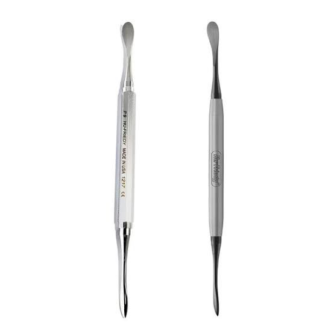
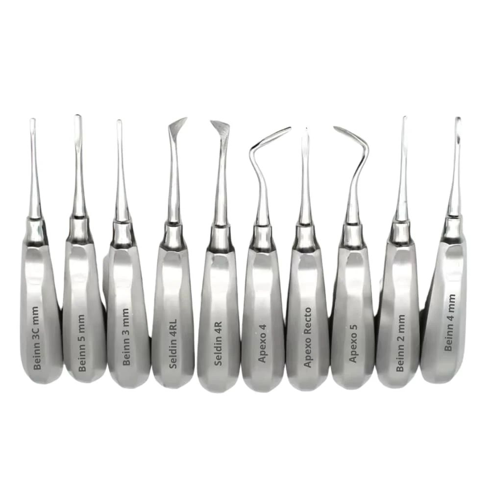

Pestaña: Instrumental de Despegamiento y Elevación

Periostótomo (Molth o Freer)Se utiliza para desprender el mucoperiostio del hueso y levantar colgajos quirúrgicos preservando la irrigación del tejido.
Elevadores o botadoresInstrumentos diseñados para la exéresis (sacar la pieza), que funcionan bajo principios físicos de palanca, cuña y rueda-eje.